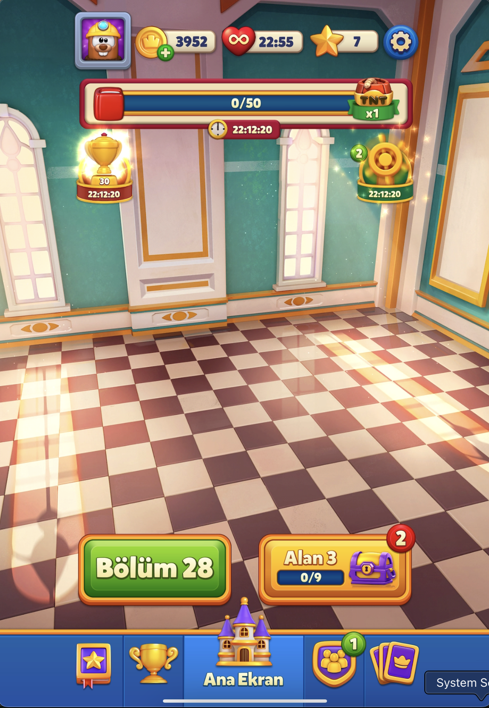
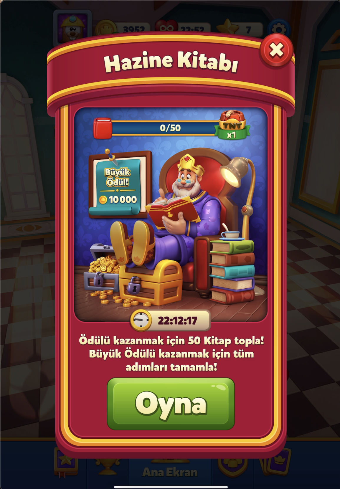
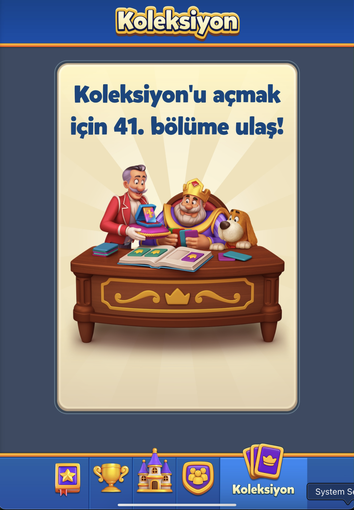
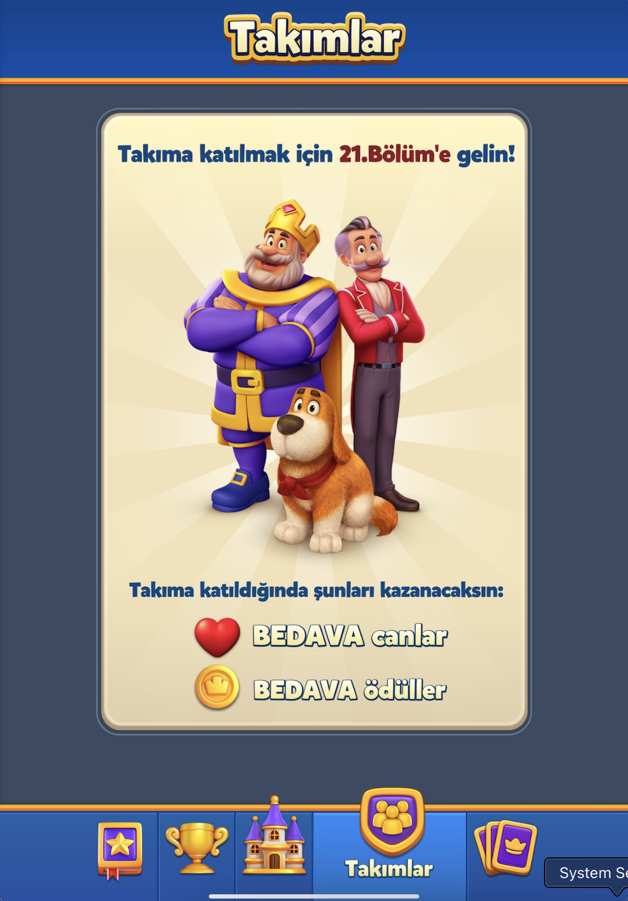
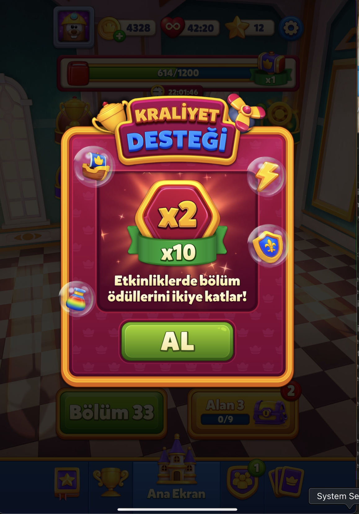
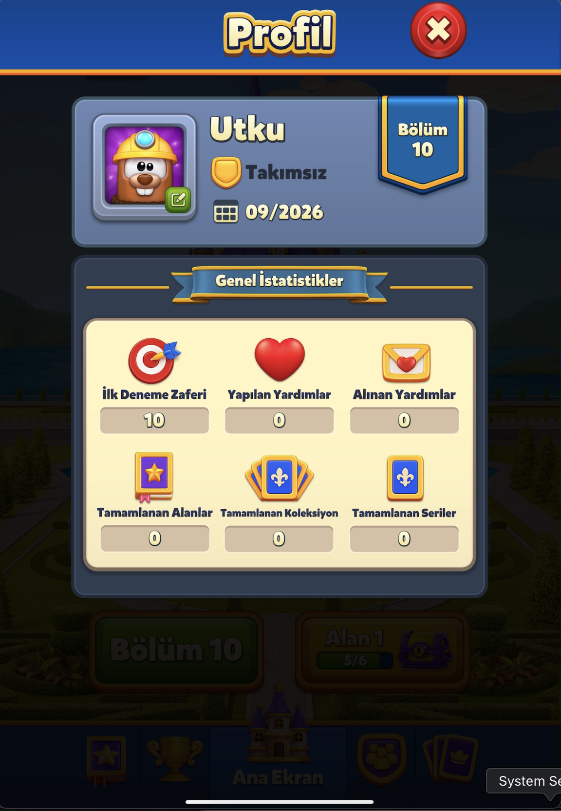
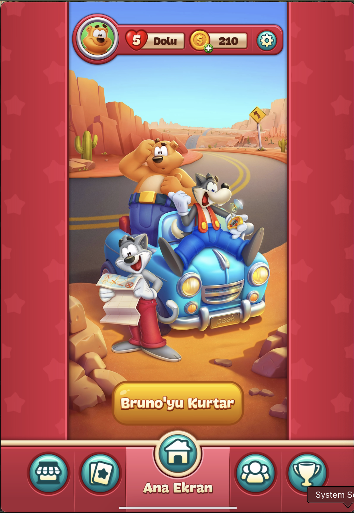

Buraya Dokun
Royal Match
Tahtayı Karart, Eli Göster
Royal Match'in ilk tutorial kartı videonun daha 3. saniyesinde ekranda. Burada yakalanan kart Kutu engelinin kuralını öğretiyor ve board-içi tutorial'ların tam formülünü tek karede ortaya koyuyor.
Tahtanın büyük kısmı koyu bir overlay ile karartılıyor; sadece 5 hücrelik bir "L" şeklindeki alan (2 Kutu + 1 Yaprak) aydınlık ve tıklanabilir kalıyor, gerisi tamamen etkileşimsiz. Altta krem zeminli, mavi kalın çerçeveli bir kart: "KUTU'yu kırmak için yanında eşleştirme yap!"
Animasyonlu parmak ikonu Kutu hücresinin üstünde beliriyor.
Parmak yarı yolda, iki hücre arasında kayıyor.
Parmak Yaprak hücresinin üstünde duruyor.
Bu statik bir "buraya dokun" oku değil, gerçek swap hareketini canlandıran bir demo animasyonu. Üstteki HUD (Hedef=36, Hamle=30, Kral portresi) tutorial sırasında da tam görünür kalıyor: sadece board karartılıyor, ilerleme durmuyor, yalnızca etkileşim kısıtlanıyor.

Önce Aşağı, Sonra Yukarı
Board-dışı (meta-ekran) tutoriallerde Royal Match tamamen farklı bir dil kullanıyor: karartma ve metin kartı yerine, parlak sarı, hafif sallanan bir ok. "Alan"ı geliştirip Kale'yi inşa etme döngüsü, bu okun iki aşamalı halde nasıl çalıştığını gösteren ilk örnek.
"Alan 1" butonu (mor hazine sandığı ikonu, "0/6") turuncu bir parıltıyla vurgulanmış, üstünde krem-mavi bir tooltip: "Görev listeni buradan açabilirsin." Tooltip'ten butona doğru animasyonlu, aşağı işaret eden sarı bir ok sallanarak dikkat çekiyor. Diğer buton ("Bölüm 2") gri/soluk renkte, vurgulanmamış: dikkat kasıtlı olarak tek bir butona kanalize ediliyor.
Butona basılınca açılan modal: üstte "Alan Gelişimi 0/6" ilerleme çubuğu ve kilitli mor sandık ikonu, altında tek bir görev satırı ("Kaleyi inşa et" yazısı ve yanında "Yap ⭐1" yeşil buton). Aynı ok bileşeni burada da var, bu kez yukarı işaret ediyor ve butonun hemen altında duruyor. "Kaleyi inşa et", Alan 1'in sırasındaki ilk görev: görevlerin gerçekten sırayla sunulduğunu doğrudan doğruluyor (bkz. Level Design §1).

Kaybedince Ne Oluyor
Kayıp akışı ve mini-oyun modları, üçüncü bir ilkeyi ortaya koyuyor: standart HUD (Hedef/Hamle) sabit bir çerçeve değil, bağlama göre yeniden yazılan bir sözlük.
"Hamlen Kalmadı!" yazılı bir şerit ~0.5-1sn ekranı yatay geçiyor, otomatik ve butonsuz.
"Devam Et?" modalı: "+5 hamle" rozeti, tek yeşil buton (💎900) ve kapatma X'i; opsiyonel bir çıkışı olan tek bir aksiyon.
Statik "Bölüm Başarısız!" ekranı: kırık kalp, hedeflerin tek tek yeşil tik/kırmızı çarpı durumu, "Güçlendirici Seç:" ile bir sonraki denemeye taşınacak booster, tek buton: "Tekrar Dene."


"Hedef" kutusu tamamen kayboluyor, HUD sadece "Hamle" ve çıkış (X) butonuna indiriliyor. Standart seviyelerin üç-parçalı HUD'u burada iki parçaya iniyor.

"Hamle" yerine geri sayan bir süre, "Hedef" yerine anahtar ikonlu bir ilerleme çubuğu ("N/65"). Aynı oyun, aynı üç-kutulu HUD çerçevesi, tamamen farklı bir sözlükle dolduruluyor.

"Hedef" burada da yok, yerine bir "Ödül" (coin) sayacı geçiyor: üç mod, üç farklı HUD sözlüğü.

Ana Ekranın Kontrol Paneli
Meta Game klasöründeki ekran görüntüleri, dosyanın önceki "navigasyon hiç açılmadı" notunu kapatıyor. Ana ekranın en altında, dış bahçe, Taht Odası içi, kilitli önizleme ekranları, Liderlik Panosu ve Profil dahil her görünümde sabit kalan bir 5 ikonlu bar var.
| İkon | Etiket | Açılan ekran |
|---|---|---|
| Mor kitap + altın yıldız | Hazine Kitabı | Yeni bulunan bir event, bkz. aşağı |
| Altın kupa | Liderlik Panosu | 3 sekme: Arkadaşlar / Oyuncular / Takımlar, Dünya/Türkiye filtresi |
| Mor-altın kale (ortada) | Ana Ekran | Ana ekranın kendisi, her zaman aktif/vurgulu |
| Mor kalkan + 3 kişi | Takımlar | Bölüm 21'e kadar kilitli önizleme |
| Mor kartlar + taç | Koleksiyon | Bölüm 41'e kadar kilitli önizleme |
Aktif olmayan 4 ikon sade ve soluk kalırken, ortadaki "Ana Ekran" ikonu sürekli mavi bir vurgu kutusu içinde duruyor: oyuncunun her zaman "eve dönüş" noktasını en belirgin tutan bir tasarım kararı. Bar, kilitli ekranlarda bile (Koleksiyon/Takımlar önizlemesi) aynen görünüyor, kilit durumu barın kendisini gizlemiyor, sadece ilgili ekranın içeriği kilitli kart olarak gösteriliyor.
Nav bar'ın 1. ikonu, hiçbir çalışma dosyasında (Meta Game dahil) daha önce belgelenmemiş bir sistemi ortaya çıkardı: Hazine Kitabı. Üstte bir kitap ikonuyla "0/50" ilerleme çubuğu ve sağda küçük bir ara ödül rozeti ("TNT x1"), altında Kral'ın okuma koltuğunda oturduğu bir illüstrasyon ve "Büyük Ödül! 10.000" (coin) etiketi, altyazı: "Ödülü kazanmak için 50 Kitap topla! Büyük Ödülü kazanmak için tüm adımları tamamla!", tek yeşil "Oyna" butonu.
Event ikonları ana ekranda iki farklı şekilde dock ediliyor. Biri üst bara bitişik, tam genişlik bir ilerleme çubuğu (Hazine Kitabı'nın "0/50" barı), kalıcı bir geri sayımla birlikte. Diğeri yüzen rozet ikonları (Kraliyet Kupası'nın kupa ikonu + oyuncunun sırası "30"; Takım Hazinesi'nin dümen ikonu + bildirim rozeti "2"), sahnenin kenarlarına, ana "Alan/Bölüm" butonlarının üstüne yerleştiriliyor. Tek bir "event tepsisi" yerine ana ekranın kendisi bir kontrol paneline dönüşüyor: her aktif event kendi küçük arayüzünü sahneye ekliyor, sahne temizlenmiyor.


Vitrine Konan Kilit
Koleksiyon ve Takımlar'ın kilitli halleri (sırasıyla Bölüm 41 ve Bölüm 21 eşikleri) birebir aynı şablonu kullanıyor: üstte mavi banner-başlık, ortada krem zeminli ve radyal ışın arka planlı bir illüstrasyon kartı, kartın içinde kalın renkli bir kilit-açma koşulu cümlesi (eşik sayısı kırmızı veya farklı bir renkle vurgulanıyor), ve sadece Takımlar'da altında ikon+bold-metin satırlarıyla bir fayda listesi.


Ortak Modal Şablonu
Önceki iki bölümdeki üç farklı diyalog, "Devam Et?", "Bölüm Başarısız!" ve "Kale", aslında tek bir çerçeve şablonu üzerine kurulu: üstte banner-başlık, sağ üst köşede kırmızı X kapatma düğmesi, altında krem/mavi gövde. Yan yana bakınca örüntü netleşiyor.
Üçü de aynı banner-başlık, kırmızı X ve krem/mavi gövde iskeletini paylaşıyor. Biri opsiyonel bir teklif, biri zorunlu bir başarısızlık ekranı, biri bir meta-ilerleme paneli olsa da, oyuncu her diyaloğu aynı çerçeveden tanıyor.
Tek, parlak yeşil, geniş bir CTA butonu her diyalogda tekrarlanıyor (Kale: "Yap ⭐1", Hazine Kitabı: "Oyna", Kraliyet Desteği: "AL"). "Tek buton = zorunlu/pozitif eylem" ilkesi burada da geçerli, ama fiil sabit değil: buton metni o anki eylemin türüne göre seçiliyor, jenerik bir "Tamam" veya "Devam Et" kullanılmıyor.
Bu modal, şablona yeni bir katman ekliyor: kartın 4 köşesinde küçük, yarı saydam baloncuklar içinde 4 ayrı ikon (gemi dümeni, şimşek, kalkan, iksir şişesi) yüzüyor. Bunlar modalın etkilediği farklı event'leri temsil ediyor: bir modalın "beni etkileyen sistemler" ilişkisini metinle açıklamak yerine küçük ikon rozetleriyle gösteriyor.

Bu tutarlılık okunabilirlikle de örtüşüyor: Hedef/Hamle gibi başlıklar hep kendi opak, krem renkli paneli içinde duruyor, hiçbir zaman doğrudan sahne arka planına bindirilmiyor (bkz. Bölüm 1'deki board_l1.png). Aynı ilke Profil ekranındaki istatistik ızgarasında da görülüyor: 2 satır x 3 sütunluk bir ikon+etiket+değer ızgarası, her hücre kendi dedike alanında duruyor. Bu ızgara, kendi oyun tasarımında "profil", "istatistik" veya "başarımlar" gibi herhangi bir bilgi ekranı için doğrudan devralınabilir bir wireframe parçası.

Toon Blast
Dört Kart, Tek Dil
Royal Match'in tek tutorial kartına karşılık, Toon Blast L1'de 4 ayrı tutorial kartı kullanıyor, her biri farklı bir yerleşimde beliriyor.
| # | Zaman | Kart |
|---|---|---|
| 1 | ~0:11 | Soldan kayan, tahtayı tam kapatmayan dock kart: "BALONLARI patlatmak için etraflarındaki küplere dokun!" |
| 2 | ~0:16 | Tam ekran karartma, ortalanmış kart: "Hamlelerin bitmeden tüm balonları ortadan kaldır!" Yeşil bir "Devam Et" butonuyla kapanıyor. |
| 3 | ~1:55 | Karartılmış ekran, kart: "Harika! Şimdi ROKETE dokun ve neler olacağını gör!" Rokete dokunmak kartı kapatıyor. |
| 4 | ~2:05-2:06 | Tahtanın solunu kaplayan kart: "Bağlı öğelere dokunup güçlü bir patlama yarat!" |
Kazanma koşulu bilinçli olarak geciktiriliyor: 2. kart oyuncunun ilk hareketinden sonra gösteriliyor, önce değil. Sıra "önce nasıl dokunacağını öğret, sonra neden dokunduğunu açıkla" şeklinde. Royal Match'in tek kartı hem mekaniği hem amacı aynı cümlede veriyor ("KUTU'yu kırmak için yanında eşleştirme yap"), bu sıralama farkı onun tek kartlı akışında hiç gözlenmiyor. Dört kart da aynı görsel dili paylaşıyor: krem/parşömen zemin, kırmızı yuvarlatılmış çerçeve, koyu kalın yazı; tek bir "tutorial kart" bileşeni, konuma göre farklı davranıyor.
L1'in 4 kartı tek seferlik bir açılış dizisiyken, Toon Blast aynı "kart + ok" dilini yeni araçlar ilk açıldığında da tekrar kullanıyor. Boks Eldiveni ilk kez kullanılabilir olduğunda bir tanıtım kartı düşüyor ("BOKS ELDİVENİ, bir sıradaki her şeyi ortadan kaldırır!"), altında araç çubuğundaki ilgili slotu işaret eden bir ok beliriyor. Onboarding L1'de bitmiyor, oyunun kendi mekaniği zaman içinde büyüdükçe aynı tutorial bileşeni yeniden devreye giriyor.

Üç Aşamalı İkna Zinciri
Royal Match'in ok ile yönlendirme diline karşılık, Toon Blast'ın meta ekranları farklı bir örüntü kullanıyor: davet ekranı, opsiyonel eylem (Atla/Oyna), sonuç ekranı üçlüsü, en az altı ayrı bağlamda tekrarlanıyor.
| Bağlam | Davet | Seçenekler | Sonuç |
|---|---|---|---|
| Kurtarma Görevi | Temalı illüstrasyon, "+5" coin rozeti | Atla / Oyna | "Bravo! İşte ödülün: +5" |
| Hamle Kalmadı | "+5 hamle ekle" teklifi | Devam Et 💰100 / IAP alternatifi | "Oyun Ekranını Görmek İçin Buraya Dokun" önizlemesi |
| Taç/seri kaybı | Taç ikonu, günlük seri sayacı | "Başlangıç Paketi" teklifi | Reddedilince sonraki aşamaya geçiliyor |
| Seviye başarısız | Kırık kalp ikonu, booster seçimi | Tekrar Dene | Booster sonraki denemeye taşınıyor |
| Şanslı Takviye | Ateş parçacıklı rozet, 15dk geri sayım | Otomatik açılan açıklayıcı modal | Süre dolmadan tamamlama çağrısı |
| Günlük Bonus | Kartlar alttan kayarak 3x3 diziliyor | Kartını seç | Seçilen kartın ödülü |

Kayıp akışı iki değil üç aşamalı, Royal Match'ten burada ayrışıyor. Royal Match'in kendi kayıp akışı hep 3 adımlı, ama ortadaki adım farklı: Royal Match'te 2. adım doğrudan ücretli "Devam Et 💎900" teklifiyken, Toon Blast'ta 2. adım kayıp korkusuna (taç+seri) dayanan ayrı bir ikna zinciri. İki oyun da tek reddetmeyle bitmeyen, katmanlı bir ikna stratejisi kullanıyor, ama duygusal tetikleyici farklı: Royal Match doğrudan fiyatı gösteriyor, Toon Blast kaybetme korkusunu işletiyor.


Önce Göster, Sonra Sor
Board içindeki iki davranış, Toon Blast'ın oyuncuya "ne olacağını" önceden söyleme alışkanlığını gösteriyor: biri Royal Match'te hiç karşılığı olmayan gerçek bir özellik, diğeri aynı davranışı sadece daha açık bir dille anlatmak.
Bir grup power-up eşiğine (5-6+ küp) ulaştığında, gruptaki tüm hücreler kendi rengini koruyarak oluşacak power-up'ın deseninin dokusunu üstlerine alıyor (Roket için küçük roket ikonu, TNT için patlama/yıldız ikonu, Lightball için küre/ağ deseni). Oyuncu grubu elle saymak zorunda kalmıyor, UI "bu grup ne üretecek" sorusunu oyuncu adına önceden cevaplıyor. Royal Match'te buna denk bir eşik önizlemesi yok, sadece oluşum anını bir beyaz glow'la vurguluyor.

Son hamlede büyük bir zincir (10+ roket birikmiş olabiliyor) tetiklenince tahta donup bu yazı beliriyor; oyuncu isterse zinciri atlayıp sonuca geçiyor, isterse izliyor. Royal Match'te de seviye sonu geçiş animasyonu aynı şekilde dokunarak atlanabiliyor, ama ekranda bunu söyleyen bir yazı yok. Fark davranışta değil: Toon Blast bu imkânı açık bir yazıyla bildiriyor, Royal Match aynı şeyi yapabilmene rağmen hiçbir metinle söylemiyor, oyuncu bunu kendi kendine keşfetmek zorunda.
HUD ve Okunabilirlik
Detaylı analiz zaten Grafik sayfasında yapıldı, burada tekrarlanmıyor. UI açısından öne çıkan üç nokta: sayaçlar (Hedef/Hamle) her zaman dedike bir krem/kahverengi kutuda duruyor, board üzerine hiç bindirilmiyor; iki katmanlı bir font hiyerarşisi (marka fontu vs rozet/aciliyet fontu) bilinçli bir ayrım taşıyor; native iOS değerlendirme diyaloğu oyunun kendi fontunu kullanmıyor, platform kısıtından doğan görünür bir dikiş izi bırakıyor.
Royal Match tarafında da aynı ilke geçerli (bkz. Royal Match Bölüm 6): "Hedef"/"Hamle" başlıkları hep opak panel içinde, arka plana hiç bindirilmiyor.